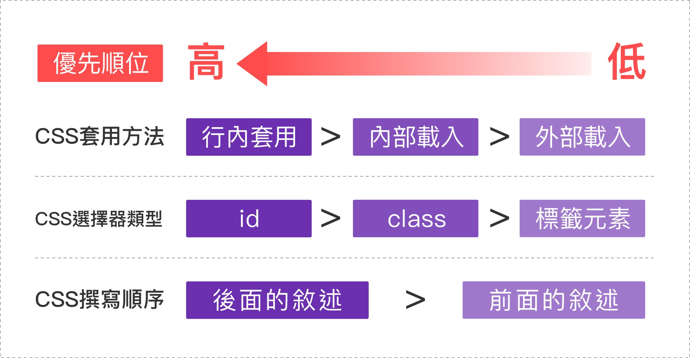
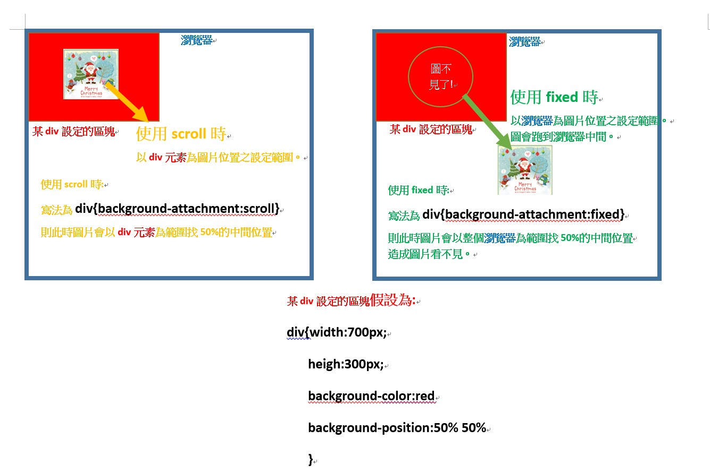

| 樣式 | 寫法 | 舉例 | 備註 |
|---|---|---|---|
| 屬性簡寫法(shorthand) | 1.用空格區隔即可加入多種屬性值，將其整合在同一行 例如:border:red 5px dotted;即包含顏色粗細樣式等屬性，之間以空格區分即可(有些省略沒打的屬性，系統會以預設值帶入) | 其他如:background，font等都是 | 有些樣式內屬性有順序規則，有些則無如:font:size family(至少要有此二屬性，且順序不可換) 加入其他屬性如:font:weight style size family (前二者可以互換寫成:font:style weight size family)，注意後二者永遠都是在後面且順序不變 另外還可以在style+/line-height，即可以調整行高，如:font:weight style size/line-height family。 |
| 單一寫法 | 只能加入一個屬性 例如:background-color:red | border-color等 | 無 |
**在寫CSS時最好以複合寫法為主，作為整個大方向，若有需要微調的時候再特別指定單一式屬性的輸入法
***css中的優先順序為:後寫的大於先寫的(即在同一個元素中，同一屬性出現不同值時，系統會以後寫者為優先判定)
注意:有一種方式可以忽視上述規則，即加入"!important"，如:color: red !important(以空格區開)，這是最後手段，切勿胡亂使用，以免打破規則!
因為若要再破解!important就得在值後面再加!important，就本末倒置了
例如:h1{color: crimson;font-size: 50px;text-align: center}
| 顏色寫法 | 範例 | 備註 |
|---|---|---|
| 16進位制 | #123456 | 16進位即:0123456789abcdef。 從0~F，0代表亮度最小，F代表亮度最大。 所以#000000就是黑色；#FFFFFF就是白色 |
| RGB表示法 | rgb(0,0,0) | 數值範圍從:0~255。 0代表亮度最小，255代表亮度最大。 所以rgb(0,0,0)就是黑色 |
| 單詞法 | red | 直接輸入顏色的名稱，可以查詢網站 https://www.ebaomonthly.com/window/photo/lesson/colorList.htm 或者直接搜尋"HTML顏色代碼" |
**若看到喜歡的顏色，不知道如何表達，可以先將螢幕截圖，再透過"PS"軟體的吸管工具得知色彩值!
(1)這個標籤是專門用來修飾"文本"的標籤，例如一段文字中想把特定文字上顏色或粗細等，就可以在Html中使用span標籤包起來，再用CSS進行修飾。
例如在html中:<p>這是一個<span>全新</span>的時代</p>，就可以針對"全新"兩個字做設定
| 選擇器樣式 | 使用範例 |
|---|---|
| 簡易選擇 | 如:h1{ } |
| 子孫選擇 | 如:#id ul li{ } h1 span{ } 皆以空格區分 |
| 群組選擇 | 如:h1,h2,h3{ } 用逗號區隔開來 |
***更多詳細的選擇器樣式，如父子選擇 相鄰選擇 通用選擇等等...將在後面提到***
注1:html情境如下:
<div class="box">....</div>
<div class="box">....</div>
<p class="box">....</p>
則可以針對段落p進行細部修改，在CSS中寫 p.box{ }
| 樣式 | 功能 | 寫法 |
|---|---|---|
| background-color | 背景顏色 | background-color:red |
| background-image | 背景圖片 | background-image:url(圖片地址) 默認值將會水平和垂直撲滿圖片，所以會有很多張 |
| background-repeat | 背景圖的鋪陳方式 | background-repeat(XY軸一起設定) background-repeat:repeat-x(X軸平舖) background-repeat:repeat-y(Y軸平舖) background-repeat:no-repeat(都不平鋪，故只會有一張)-->應該比較常用 |
| background-position | 圖片位置 | background-position:x y。以XY軸來設定，並以正負值表示左右或上下(px和%都可)；或者可在x軸輸入單詞left right center，Y軸輸入top center bottom。 background-position:0 0(即在左上角) background-position:left top(亦左上角) |
| background-attachment | 隨滾動條移動的方式 | background-attachment:scroll(照元隨著滾動條移動；並且位置是根據當前選擇的區塊作偏移) background-attachment:fixed(圖片被固定，不會隨滾動條移動；並且位置是根據整個瀏覽器偏移) 詳細見注2 |
注2:scroll和fixed的位置設定範圍依據見下圖
| 屬性值 | 效果 | 備註 |
|---|---|---|
| underline | 為文字加上底線 | 若要一次加入多種屬性，直接以空格隔開輸入即可 例如:text-decoration:overline underline line-through |
| overline | 為文字加上頂線 | |
| line-throught | 為文字加刪除線 |
| 屬性值 | 效果 | 備註 |
|---|---|---|
| lowercase | 小寫字母 | 對英文等有大小寫的字體才有用 |
| uppercase | 大寫字母 | |
| capitalize | 每個字的首字大寫 |